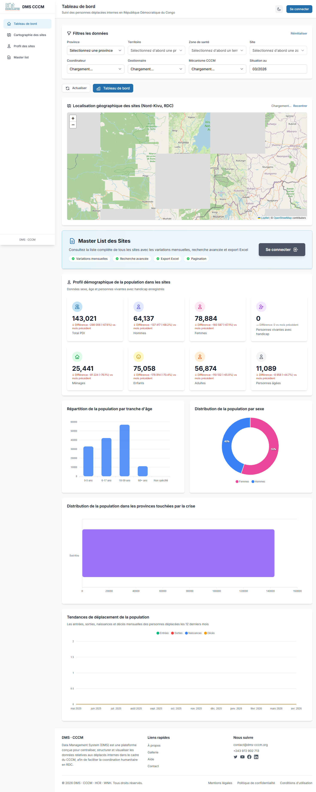

Tableau de bord
/dashboard
Vue globaleIndicateursNavigation
Fonctionnalites detaillees
- Affiche les indicateurs de synthese de la plateforme.
- Permet de naviguer rapidement vers les modules operationnels.
- Centralise les raccourcis vers les rapports et la gestion terrain.
Comment l'utiliser
- Verifier le profil actif en haut a droite.
- Lire les KPI principaux pour identifier les priorites.
- Cliquer sur un module via le menu gauche pour poursuivre l'action.

Capture ecran - Tableau de bord